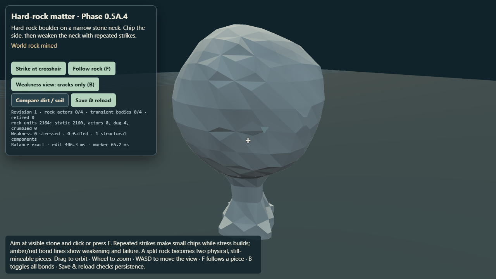
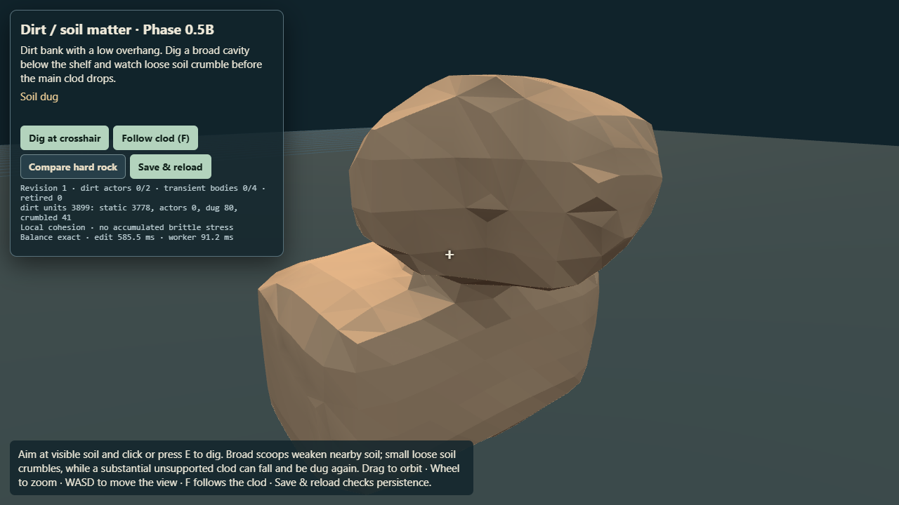
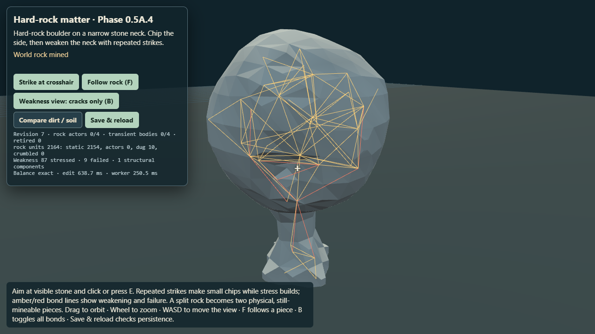
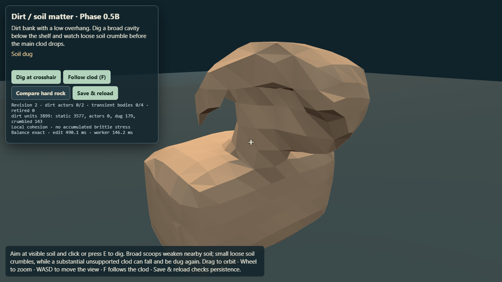

Matched browser captures from the A.4 hard-rock regression and Phase 0.5B dirt fixture. Rock builds persistent stress before a brittle split. Dirt opens a broad cavity, locally crumbles, and can release a soft clod.
1. First interaction
Hard rock · one small irregular chip

Dirt · one broad scoop with loose-soil crumble

2. Repeated interactions
Hard rock · accumulated bond weakness while mostly intact

Dirt · cavity undermines local support

3. Unsupported material detaches
Hard rock · brittle fracture leaves persistent pieces